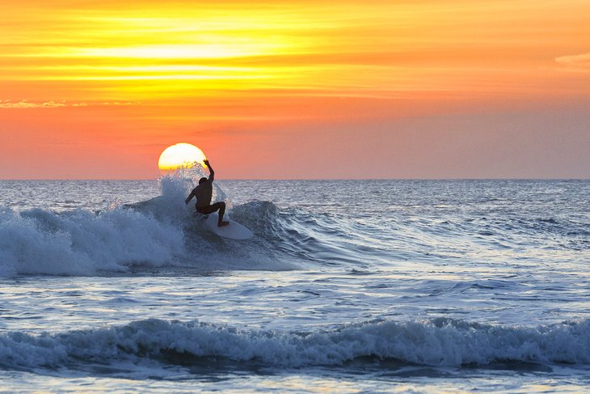

Tourist Destination
Tourist destination near Denpasar

KUTA
Kuta was originally known as a fishing village, it was one of the first towns on Bali to see substantial tourist development, and as a beach resort remains one of Indonesia's major tourist destinations.

ULUN DANU TEMPLE
Ulun Danu Beratan Temple is both a famous picturesque landmark and a significant temple complex on the western side of Beratan Lake in Bedugul, central Bali.

MOUNT BATUR
Mount Batur is one of the most popular sights in Bali, for good reason. It's a beginner-friendly climb, and you get to see amazing views.